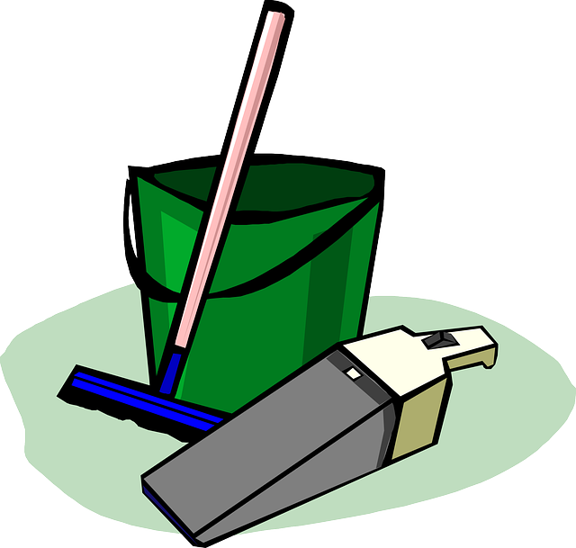

방청소 효율적으로 하기
1. 더러운 옷과 깨끗한 옷을 구별한다: 더러운 옷은 세탁물 바구니에 넣고 깨끗한 옷은 잘 개서 옷장에 넣자.
2. 세탁기를 먼저 돌리자: 세탁기가 돌아가는 시간이 있기 때문이다. 세탁기가 돌아가는 동안 다른 청소를 하다가 세탁이 종료되면 빨래부터 널자. 왜냐햐면 젖은 빨래를 방치하면 냄새가 나기 시작하기 때문이다.
3. 방안의 쓰레기는 자주 치우자: 버려야 할것은 빠르게 버리는게 제일 좋다.
4. 그릇이나 물컵을 싱크대로 보내자: 냄새가 날 수 있고, 청소하다 깨먹을 수 있다.
5. 물건들을 분류한다: 만약 버릴지 말지 고민되는 물건이 나타났다면 일단 적당한곳에 정리하고 나중에 생각하자. 고민하다 청소 시간을 낭비한다.
6. 이제 본격적인 청소를 한다.
7. 빨래를 했다면 가끔씩 세탁물을 삶아주자: 옷의 쉰내를 잡아준다.